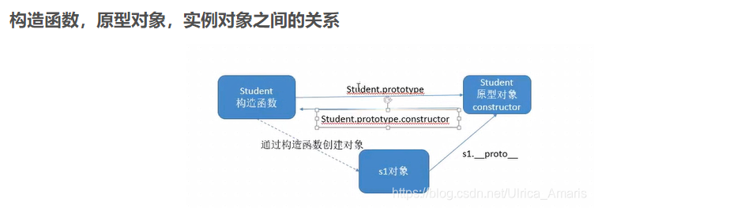

-
1.使用字面量创建(单例模型)，创建多个对象代码重复
- 2.工厂模式创建， 内部使用返回obj,
- 3.构造函数模式 函数+new（任何函数，只要通过 new 操作符来调用，那它就可以作为构造函数）
- 4.原型模式 prototype所有属性+new
- 5.原型模式+构造函数 构造函数+原型+new
- 6.动态原型 判断+原型
- 7.寄生构造 工厂+new
理解：
原型：每一个构造函数都一个属性，prototype,作用:实例共享属性和方法
prototype通过调用构造函数创建的对象叫原型对象
每个原型对象也是对象，他也有自己原型，就形成了一个原型链

原型链的继承